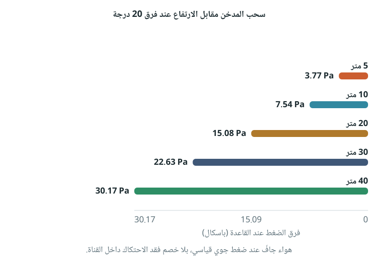

لماذا يسحب المدخن بلا مروحة؟
The stack effect moves air without a fan
فرق كثافة هواء بين 20 و40 درجة يعطي 0.077 كغ/م³، ومع عشرة أمتار ارتفاع ينتج 7.5 باسكال سحبًا. هذا ضعيف أمام مروحة، لكنه مجاني ودائم، وهو نفس ما يهوّي المباني في الشتاء.
الهواء الساخن أخفّ من البارد عند الضغط نفسه، فعمود الهواء داخل المدخن أقل وزنًا من عمود الهواء خارجه بالمقطع نفسه. الفرق في الوزن يتحوّل إلى فرق ضغط عند القاعدة يدفع الهواء إلى الداخل ويصعد. لا مروحة ولا كهرباء، لكن النتيجة تعتمد بشدة على ارتفاع المدخن وعلى فرق الحرارة: مضاعفة الارتفاع تضاعف السحب، ونقص فرق الحرارة إلى النصف يُنقصه إلى النصف تقريبًا.
الآلية
كيف يحدث الأمر على مستوى الجسيمات أو المتغيّرات المباشرة
السحب عملية هيدروستاتيكية: الضغط عند قاعدة العمود الساخن أقلّ منه خارجًا عند المنسوب نفسه، فيسري الهواء من الضغط الأعلى إلى الأدنى. الطاقة التي تحرّك الهواء هي فرق طاقة الوضع بين العمودين، وتتبدّد بالاحتكاك داخل القناة، ولهذا لا يصعد السحب إلى ما لا نهاية مع الارتفاع بل يقف عند توازن بين دفع الطفو وفقد الاحتكاك.
الأرقام والوحدات
العلاقات والوحدات والنطاقات العددية التي تسند الشرح
كثافة الهواء = الضغط ÷ (ثابت الغاز × الحرارة المطلقة): 1.204 كغ/م³ عند 20 درجة و1.127 عند 40 درجة. الفرق 0.077 كغ/م³ يضرب في 9.81 وفي الارتفاع: 3.8 باسكال لخمسة أمتار، 7.5 لعشرة، 15.1 لعشرين، 30.2 لأربعين.
الفرق الدقيق
المفهوم الملتبس الذي يُخلَط به، وأين ينفصلان
فرق الضغط هذا ليس الضغط داخل المدخن بل القوة الدافعة الصافية؛ الضغط المطلق في القاعدة قد يكون أقلّ من الجوي. والثاني: المدخن لا «يمتصّ» الدخان، بل يفتح له طريقًا لأن الهواء الخارجي أثقل ويدفعه إلى أعلى — لذا ينهار السحب إذا سُدّ مدخل الهواء في الغرفة.
حدود التعريف
أين ينكسر التعريف أو النموذج وما الذي لا يفسّره
الحساب لعمود هواء نظيف بلا مقاومة قناة، والقيم الحقيقية أقلّ لأن الاحتكاك والانحناءات تستهلك جزءًا منها. وفي الصيف حين يكون الخارج أسخن من الداخل ينعكس الاتجاه فيصير المدخن مصدر سحب إلى الداخل، وهو سبب دخان المدفأة العكسي في الأيام الحارة.

| الكمية | القيمة | المصدر |
|---|---|---|
| كثافة هواء عند 20 درجة | 1.204 kg/m³ | [1] |
| كثافة هواء عند 40 درجة | 1.127 kg/m³ | [1] |
| فرق الضغط لمدخن 10 أمتار | 7.5 Pa | [2] |
| فرق الضغط لمدخن 40 مترًا | 30.2 Pa | [2] |
المصادر
- 1 Engineering ToolBox — Natural Draught Ventilation — Engineering ToolBox. www.engineeringtoolbox.com/natural-draught-ventilation-d_122.html · اطُّلع عليه 2026-11-16
- 2 OpenStax College Physics 2e — Flow Rate and Its Relation to Velocity — OpenStax. openstax.org/books/college-physics-2e/pages/12-1-flow-rate-and-its-relation-to-velocity · اطُّلع عليه 2026-11-16
راجعه: مراجعة آلية — ديوان المعرفة (أرقام محسوبة + مصادر متحققة) 2026-11-16 · 2026-11-16 · آخر تحديث 2026-11-16
رجوع إلى المقالات